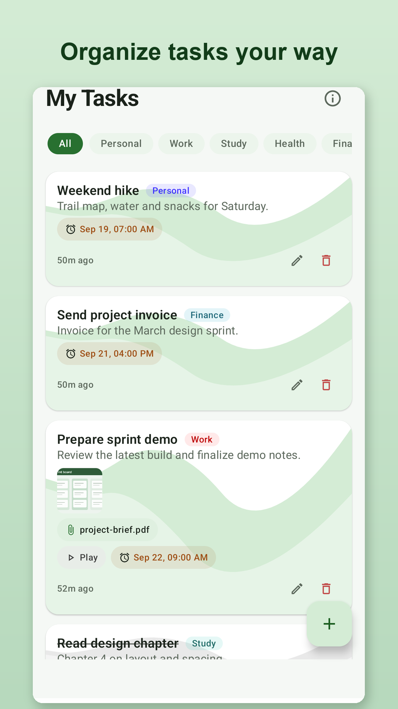
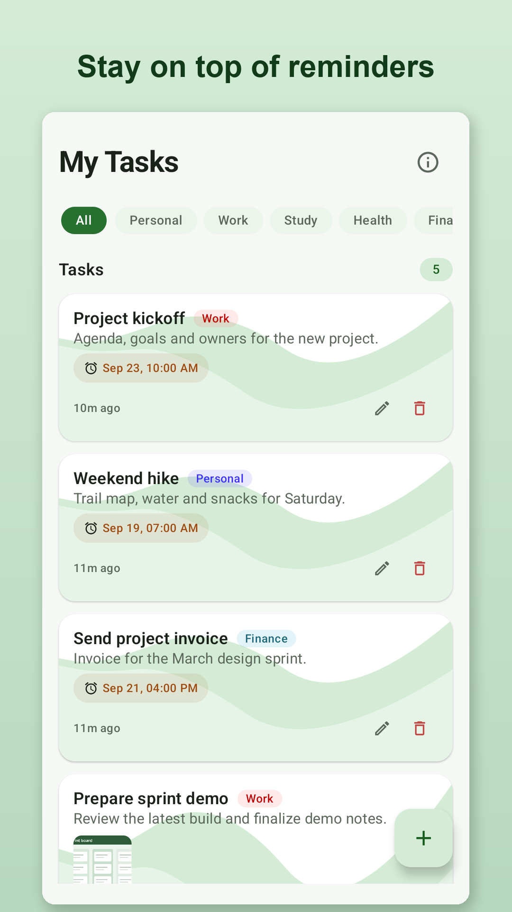
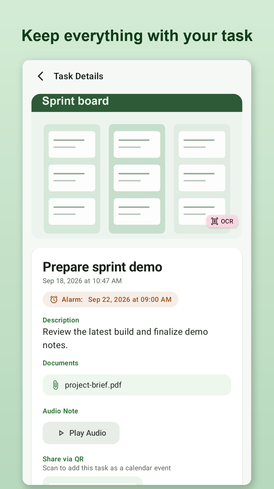
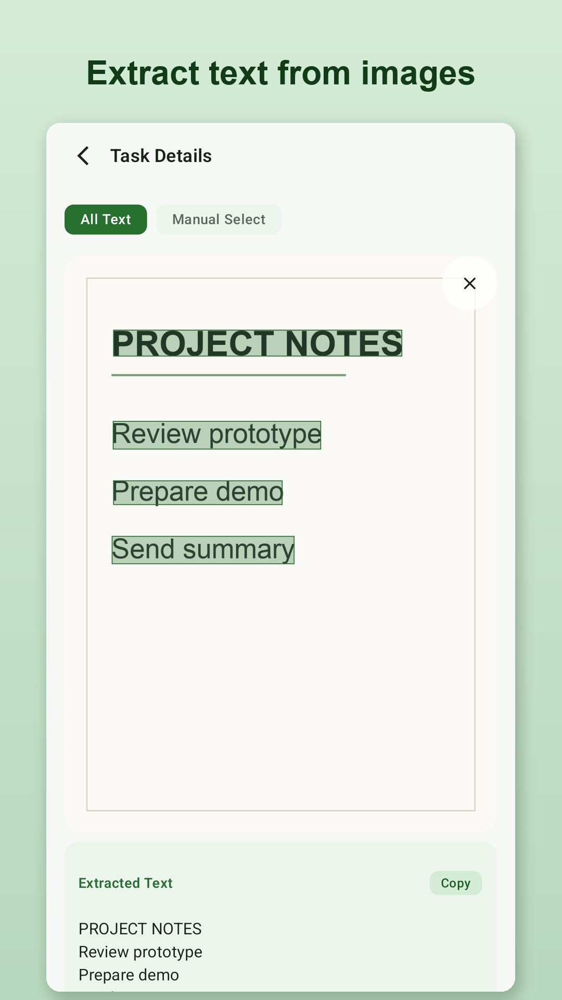
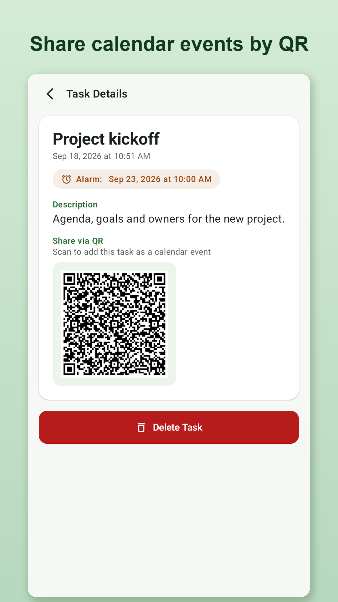
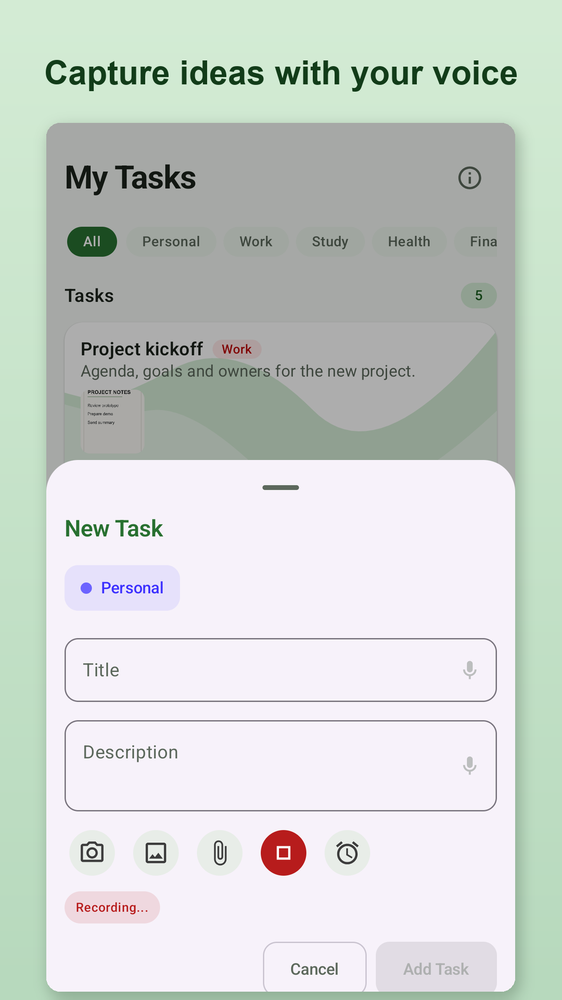
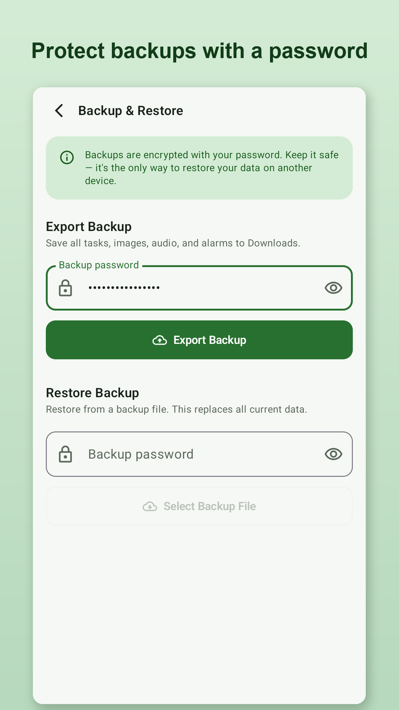
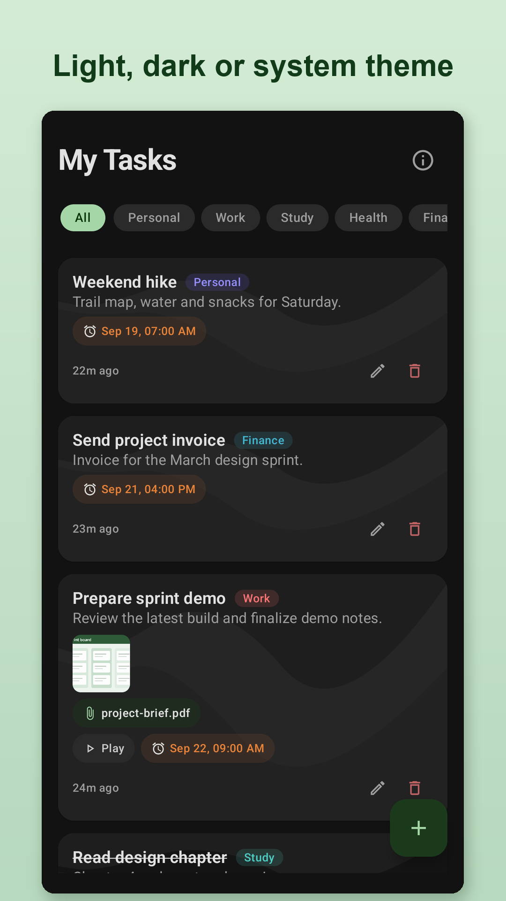

✅ Tasks, Your Way
Create tasks and group them by type such as Work, Personal, Study, Health or Finance. Swipe to complete or restore a task, or use the same action from the task row if you prefer not to swipe.
MyTask: Tasks & Reminders is a simple task manager that helps you organize daily tasks, reminders, notes and important information — without creating an account. Set reminders, attach photos or documents, record voice notes, extract text from images, share calendar events as QR codes, and create password-protected backups.


Designed to help you stay organized without sacrificing your privacy.
Create tasks and group them by type such as Work, Personal, Study, Health or Finance. Swipe to complete or restore a task, or use the same action from the task row if you prefer not to swipe.
Set a date and time for any task and get an Android notification when it is due.
Attach photos from your camera or gallery, plus PDFs and other documents, so everything you need sits with the task.
Record a voice note and attach it to a task, or dictate a title or description instead of typing it.
Pull the text out of a photo or screenshot. Copy everything at once, or tap to select just the parts you need.
Turn a task into a QR code that someone else can scan to preview the event and add it to their own calendar app.
Export your tasks and attachments to a backup file protected by a password you choose, and restore it when you need it.
Choose the theme you prefer, or let MyTask follow your Android system setting automatically.
A short walkthrough introduces the main features the first time you open MyTask, and you can replay it any time from the About screen.
Text and colours are tuned for comfortable reading in both light and dark themes, and buttons stay readable when you increase your device's font size.
Start using MyTask straight away. There is no sign-up, and no developer-operated cloud service for your tasks.
Privacy isn't an afterthought. It's one of MyTask's core principles.
MyTask does not require an account or a developer-operated cloud service for your tasks, and your task data is primarily stored on the device. There are no ads and no developer-run analytics. Text recognition is powered by Google ML Kit, which may send limited usage and diagnostic data to Google, and dictation uses whichever speech recognition provider your device is set up to use, which may use the internet. Read the Privacy Policy for details.
A clean, intuitive interface that gets out of your way.






MyTask helps you organize your life while keeping your data under your control.
View on Google Play Not yet publicly available